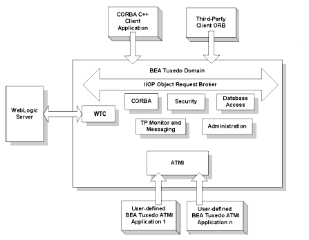

The Oracle Tuxedo CORBA Java client and Oracle Tuxedo CORBA Java client ORB were deprecated in Tuxedo 8.1 and are no longer supported. All Oracle Tuxedo CORBA Java client and Oracle Tuxedo CORBA Java client ORB text references, associated code samples, should only be used to help implement/run third party Java ORB libraries, and for programmer reference only.
Note:
Technical support for third party CORBA Java ORBs should be provided by their respective vendors. Oracle Tuxedo does not provide any technical support or documentation for third party CORBA Java ORBs.
Introduction to the Oracle Tuxedo CORBA Environment
The CORBA environment in the Oracle Tuxedo product is based on the CORBA standard as a programming model for developing enterprise applications with high performance, scalability, and reliability. Oracle Tuxedo CORBA extends the Object Request Broker (ORB) model with online transaction processing (OLTP) functions. The Oracle Tuxedo CORBA deployment infrastructure delivers secure, transactional, distributed applications in a managed environment.
CORBA objects built with the Oracle Tuxedo product are accessible from Web-based applications that communicate using the CORBA Object Management Group (OMG) Internet Inter-ORB Protocol (IIOP). IIOP is the standard protocol for communications running on the Internet or on an intranet within an enterprise.
Oracle Tuxedo CORBA has a native implementation of IIOP, ensuring high-performance, interoperable, distributed-object applications for the Internet, intranets, and enterprise computing environments. You can build integrated enterprise applications using multiple programming models. CORBA and Application-to- Transaction-Monitor-Interface (ATMI) applications can be developed with fully integrated transaction management, security, administration, and reliability capabilities.
The interoperability technology incorporated into Oracle Tuxedo CORBA provides for scalable connectivity between the CORBA and WebLogic Server environments. For information on interoperability see BEA Tuxedo Interoperability in the Oracle Tuxedo online documentation.
Figure 1-1 illustrates the Oracle Tuxedo CORBA environment.
Figure 1-1 Oracle Tuxedo CORBA

The following sections outline the features of the CORBA environment.
Features of the Oracle Tuxedo CORBA Environment
The CORBA environment in the Oracle Tuxedo product provides the following set of features:
A C++ server-side ORB
Client application options including:
CORBA C++ client
Third-party client ORBs
A proven run-time infrastructure for hosting e-commerce transaction applications, including client connection concentrators, high-performance message routing and load balancing, and high-availability features.
A Transaction Processing (TP) Framework for object state and transaction management in CORBA applications.
A Management Information Base (MIB) that defines the key management attributes of CORBA applications. In addition, programming interfaces and scripting capabilities are available to access the MIBs.
An Administration Console graphical user interface (GUI) for the management of CORBA applications.
The CORBA Transaction Service (OTS) to ensure the integrity of your data even when transactions span multiple programming models, databases, and applications.
A security service that handles authentication for principals that need to access resources in a CORBA object in the CORBA environment.
The Secure Sockets Layer (SSL) protocol to encrypt client to server communication on the wire. SSL support includes IIOP connection pools.
A Security Service Plug-In Interface (SPI) for CORBA that allows integration of third-party security plug-ins.
A Notification Service that receives event posting messages, filters them, and distributes the messages to subscribers. The Notification Service provides two sets of interfaces: a CORBA-based interface and a simplified Oracle-proprietary interface.
An implementation of the CosLifeCycle service.
An implementation of CosNaming that allows Oracle Tuxedo CORBA server applications to advertise object references using logical names.
An interface repository that stores meta information about Oracle Tuxedo CORBA objects. Meta information includes information about modules, interfaces, operations, attributes, and exceptions.
Dynamic Invocation Interface (DII) support. DII allows Oracle Tuxedo CORBA client applications to create requests dynamically for objects that were not defined at compile time.
The remainder of this manual describes the programming environment for Oracle Tuxedo CORBA and the development process for CORBA applications.